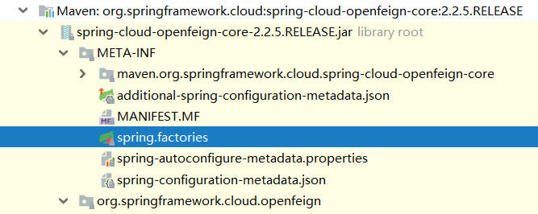
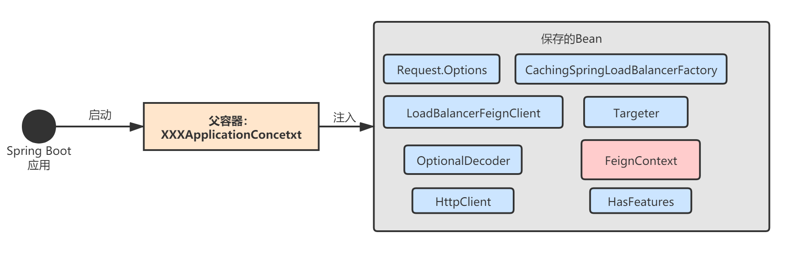
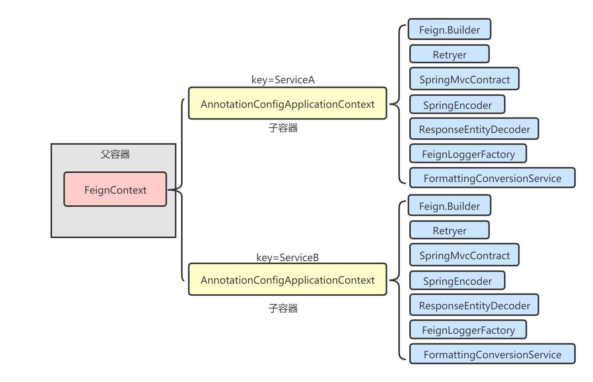
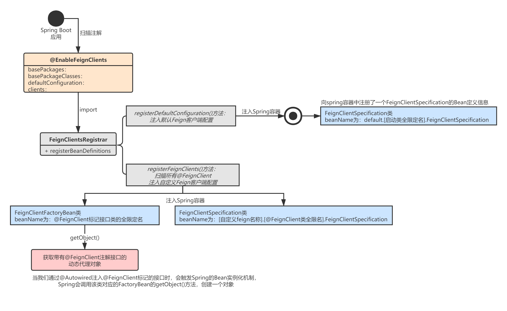

透彻理解Spring Cloud系列（二七）——Feign初始化流程：客户端配置原理
还是和讲解Ribbon的流程一样，在正式讲解Feign工作流程之前，我必须先将Feign客户端的配置原理讲清楚。Feign客户端也一共有三种级别的配置，优先级依次从高到低：
- 基于
@FeignClient的自定义配置； - 基于
@EnableFeignClients的全局配置； - 基于
org.springframework.cloud.openfeign.FeignClientsConfiguration的默认配置。
也就是说，Feign客户端首先使用自定义配置，自定义配置中找不到再找全局配置，全局配置也找不到则使用默认配置。
一、Feign客户端配置
我们先来看下如何对Feign客户端进行配置，Java Bean是最常用也是最推荐的方式，我这里用Java Bean方式创建示例代码。
1.1 自定义配置
自定义配置使用@FeignClient注解，name表示Feign客户端名称，configuration表示自定义的Feign客户端配置类。我们可以在自定义的Feign客户端配置类中通过@Bean方式添加各种Feign核心组件，比如Encoder、Decoder等等：
@FeignClient(name = "ServiceA", configuration = FooConfiguration.class)
public interface ServiceAClient {
//..
}
public class FooConfiguration {
// 配置拦截器
@Bean
public RequestInterceptor requestInterceptor() {
return new MyRequestInterceptor();
}
// 配置日志级别：none，basic，headers，full
@Bean
Logger.Level feignLoggerLevel() {
return Logger.Level.FULL;
}
}
1.2 全局配置
我们使用Feign时，一般在启动类上注解@EnableFeignClients，可以通过defaultConfiguration设置Feign客户端的全局配置：
@SpringBootApplication
@EnableEurekaClient
@EnableFeignClients(defaultConfiguration = GlobalFeignConfiguration.class)
public class ServiceBApplication {
public static void main(String[] args) {
SpringApplication.run(ServiceBApplication.class, args);
}
}
1.3 默认配置
Spring Cloud OpenFeign还为我们提供了一个默认Feign客户端配置类：org.springframework.cloud.openfeign.FeignClientsConfiguration。也就是说只要我们引入了feign依赖，即使什么都不配置，这个默认配置也会生效。
二、Feign客户端初始化
了解了Feign客户端的三种配置，我们再来看看Feign是如何进行初始化的，Spring又是在什么时候帮我们把Feign客户端需要的配置类以及那些核心组件（Encoder、Decoder...）初始化好的呢？
2.1 Spring Boot自动装配
当我们在项目里引入Spring Cloud OpenFeign相关依赖后，Spring Boot应用启动时，就会触发自动装配：

# spring.factories
org.springframework.boot.autoconfigure.EnableAutoConfiguration=\
org.springframework.cloud.openfeign.ribbon.FeignRibbonClientAutoConfiguration,\
org.springframework.cloud.openfeign.hateoas.FeignHalAutoConfiguration,\
org.springframework.cloud.openfeign.FeignAutoConfiguration,\
org.springframework.cloud.openfeign.encoding.FeignAcceptGzipEncodingAutoConfiguration,\
org.springframework.cloud.openfeign.encoding.FeignContentGzipEncodingAutoConfiguration,\
org.springframework.cloud.openfeign.loadbalancer.FeignLoadBalancerAutoConfiguration
spring.factories文件可以用来配置一些自动装配类，这些自动装配类可以将当前项目包以外的bean（即在pom文件中添加的依赖jar）注册到Spring容器。
spring.factories文件中最重要的自动装配类是FeignRibbonClientAutoConfiguration和FeignAutoConfiguration，它们的加载过程如下图：

上面这张图看起来挺复杂，其实很简单，本质是Spring Boot启动后，会注入一些Feign组件到应用的根ApplicationCentext容器中，便于后续使用：
- 首先，加载
FeignRibbonClientAutoConfiguration，这个装配类的核心作用就是注入集成Ribbon的Feign客户端。具体实现时一共注入了三个组件：Request.Options、CachingSpringLoadBalancerFactory和LoadBalancerFeignClient，其中LoadBalancerFeignClient根据依赖不同，具体实现有所不同，默认是使用DefaultFeignLoadBalancedConfiguration配置； - 接着，加载
FeignLoadBalancerAutoConfiguration，这个配置类主要针对应用没有使用Ribbon的情况； - 最后，加载
FeignAutoConfiguration，它为Feign生成了很多默认的组件。
我们可以将上图简化，只关注最终生成的核心组件。这些组件做什么用？别急，我后面会逐一分析，这里重点关注FeignContext这个组件，它保存了每一个Feign客户端的独立Application上下文信息：

2.2 独立上下文FeignContext
每一个Feign客户端拥有自己独立的Application上下文，FeignContext就保存了所有Feign客户端的上下文信息：
@Configuration(proxyBeanMethods = false)
@ConditionalOnClass(Feign.class)
@EnableConfigurationProperties({ FeignClientProperties.class, FeignHttpClientProperties.class })
@Import(DefaultGzipDecoderConfiguration.class)
public class FeignAutoConfiguration {
@Autowired(required = false)
private List<FeignClientSpecification> configurations = new ArrayList<>();
@Bean
public FeignContext feignContext() {
// 创建上下文
FeignContext context = new FeignContext();
context.setConfigurations(this.configurations);
return context;
}
//...
}
来看下FeignContext的构建：
public class FeignContext extends NamedContextFactory<FeignClientSpecification> {
public FeignContext() {
super(FeignClientsConfiguration.class, "feign", "feign.client.name");
}
}
其实就是调用了父类NamedContextFactory的构造器，这个类有没有很熟悉？没错，和Ribbon上下文的构造一模一样：
// NamedContextFactory.java
public abstract class NamedContextFactory<C extends NamedContextFactory.Specification>
implements DisposableBean, ApplicationContextAware {
// 维护Feign客户端对应的ApplicationContext上下文
private Map<String, AnnotationConfigApplicationContext> contexts = new ConcurrentHashMap<>();
// 维护Feign客户端的配置类，配置类就是@FeignClient和@EnbaleFeignClients中设置的配置类
// key为Feign客户端名称，value为一个List，包含所有该客户端的配置类
private Map<String, C> configurations = new ConcurrentHashMap<>();
// 父ApplicationContext
private ApplicationContext parent;
// 默认配置类：FeignClientsConfiguration.class
private Class<?> defaultConfigType;
// 默认值：feign
private final String propertySourceName;
// 默认值：feign.client.name
private final String propertyName;
public NamedContextFactory(Class<?> defaultConfigType, String propertySourceName,
String propertyName) {
this.defaultConfigType = defaultConfigType;
this.propertySourceName = propertySourceName;
this.propertyName = propertyName;
}
protected AnnotationConfigApplicationContext getContext(String name) {
// 如果不存在该Feign客户端对应的上下文对象，则调用createContext(name)创建一个，然后缓存
if (!this.contexts.containsKey(name)) {
synchronized (this.contexts) {
if (!this.contexts.containsKey(name)) {
this.contexts.put(name, createContext(name));
}
}
}
// 如果存在，则直接返回
return this.contexts.get(name);
}
// 创建名为name的Feign客户端的ApplicationContext上下文
protected AnnotationConfigApplicationContext createContext(String name) {
AnnotationConfigApplicationContext context = new AnnotationConfigApplicationContext();
// 1.将所有自定义配置类注入到ApplicationContext中
if (this.configurations.containsKey(name)) {
for (Class<?> configuration : this.configurations.get(name)
.getConfiguration()) {
context.register(configuration);
}
}
// 2.将全局配置类注入到ApplicationContext中（通过@EnableFeignClients(defaultConfiguration=xxx)配置）
for (Map.Entry<String, C> entry : this.configurations.entrySet()) {
if (entry.getKey().startsWith("default.")) {
for (Class<?> configuration : entry.getValue().getConfiguration()) {
context.register(configuration);
}
}
}
// 3.将默认配置类FeignClientsConfiguration注入到ApplicationContext中
context.register(PropertyPlaceholderAutoConfiguration.class, this.defaultConfigType);
context.getEnvironment().getPropertySources().addFirst(new MapPropertySource(
this.propertySourceName,
Collections.<String, Object> singletonMap(this.propertyName, name)));
// 设置父ApplicationContext，这样可以使得当前创建的子ApplicationContext可以使用父上下文中的Bean
if (this.parent != null) {
context.setParent(this.parent);
}
context.refresh();
return context;
}
public <T> T getInstance(String name, Class<T> type) {
AnnotationConfigApplicationContext context = getContext(name);
if (BeanFactoryUtils.beanNamesForTypeIncludingAncestors(context,
type).length > 0) {
return context.getBean(type);
}
return null;
}
}
举个例子，加入我们通过@FeignClient定义了两个Feign客户端：ServiceA和ServiceB，那么FeignContext中保存的信息就是类似下面这样的：

通过这种父子容器的模式，每一个Feign客户端可以自定义独立的Feign组件，在查找Feign组件时也是优先从自己的容器中查找，找不到再从父容器查找。
2.3 懒加载
这里读者一定有一个疑问：上图中子容器的这些Feign组件是什么时候注入的？Spring Boot的AutoConfiguration类也并没有注入这些组件呀！
我们来看下启动类上的@EnableFeignClients注解：
@Retention(RetentionPolicy.RUNTIME)
@Target(ElementType.TYPE)
@Documented
@Import(FeignClientsRegistrar.class)
public @interface EnableFeignClients {
String[] value() default {};
String[] basePackages() default {};
Class<?>[] basePackageClasses() default {};
// 全局Feign配置
Class<?>[] defaultConfiguration() default {};
Class<?>[] clients() default {};
}
Spring Boot启动后，扫描到该注解，会触发FeignClientsRegistrar.registerBeanDefinitions的执行，本质就是注入一些Bean到Spring的根容器中：
class FeignClientsRegistrar implements ImportBeanDefinitionRegistrar, ResourceLoaderAware, EnvironmentAware {
@Override
public void registerBeanDefinitions(AnnotationMetadata metadata,
BeanDefinitionRegistry registry) {
// 注入默认配置类到容器
registerDefaultConfiguration(metadata, registry);
// 注入Feign客户端配置到容器
registerFeignClients(metadata, registry);
}
//...
}
FeignClientsRegistrar.registerBeanDefinitions方法一共做了三件事情：
- 向Spring容器中注册了一个
FeignClientSpecificationBean定义对象，beanName为default.[启动类全限定名].FeignClientSpecification，这个其实就是Feign的全局配置信息； - 扫描所有
@FeignClient注解的接口，注入自定义Feign配置，beanName为[自定义feign名称].[@FeignClient注解接口的类全限名].FeignClientSpecification，这个其实就是Feign的自定义配置信息； - 扫描所有
@FeignClient注解的接口，注入FeignClientFactoryBeanBean定义对象，beanName为：@FeignClient标记接口类的全限定名。

FeignClientSpecification包含了Feign的配置信息，而FeignClientFactoryBean则是一个用来创建FeignClient代理对象的工厂：当我们通过@Autowired注入
@FeignClient标记的接口时，会触发Spring的Bean实例化机制，Spring会调用该类对象的FactoryBean的getObject()方法，创建一个对象。
但是，还是没有看到到底是在哪里给各个FeignClient注入默认配置的。别急，Spring Cloud这里使用了懒加载机制，当我们首次使用Feign客户端时，客户端内部必然引用Feign的各个组件，此时NamedContextFactory会为每个Feign客户端创建独立的ApplicationContext，里面包含了基于FeignClientsConfiguration创建的默认组件：
// NamedContextFactory.java
// 创建名为name的Feign客户端的ApplicationContext上下文
protected AnnotationConfigApplicationContext createContext(String name) {
AnnotationConfigApplicationContext context = new AnnotationConfigApplicationContext();
// 1.将所有自定义配置类注入到ApplicationContext中
if (this.configurations.containsKey(name)) {
for (Class<?> configuration : this.configurations.get(name)
.getConfiguration()) {
context.register(configuration);
}
}
// 2.将全局配置类注入到ApplicationContext中（通过@EnableFeignClients(defaultConfiguration=xxx)配置）
for (Map.Entry<String, C> entry : this.configurations.entrySet()) {
if (entry.getKey().startsWith("default.")) {
for (Class<?> configuration : entry.getValue().getConfiguration()) {
context.register(configuration);
}
}
}
// 3.将默认配置类FeignClientsConfiguration注入到ApplicationContext中
context.register(PropertyPlaceholderAutoConfiguration.class, this.defaultConfigType);
context.getEnvironment().getPropertySources().addFirst(new MapPropertySource(
this.propertySourceName,
Collections.<String, Object> singletonMap(this.propertyName, name)));
// 设置父ApplicationContext，这样可以使得当前创建的子ApplicationContext可以使用父上下文中的Bean
if (this.parent != null) {
context.setParent(this.parent);
}
context.refresh();
return context;
}
三、总结
本章，我对Feign的客户端配置原理进行了讲解，Spring Cloud对Feign进行了整合，Feign客户端的初始化流程和Ribbon的思路完全一样，就是利用Spring的自动装配机制完成Feign核心组件的注入，同时为每个Feign客户端分配一个独立的ApplicationContext上下文。
下一章，我将讲解Feign客户端生成的原理，也就是Feign源码中最核心的动态代理机制。